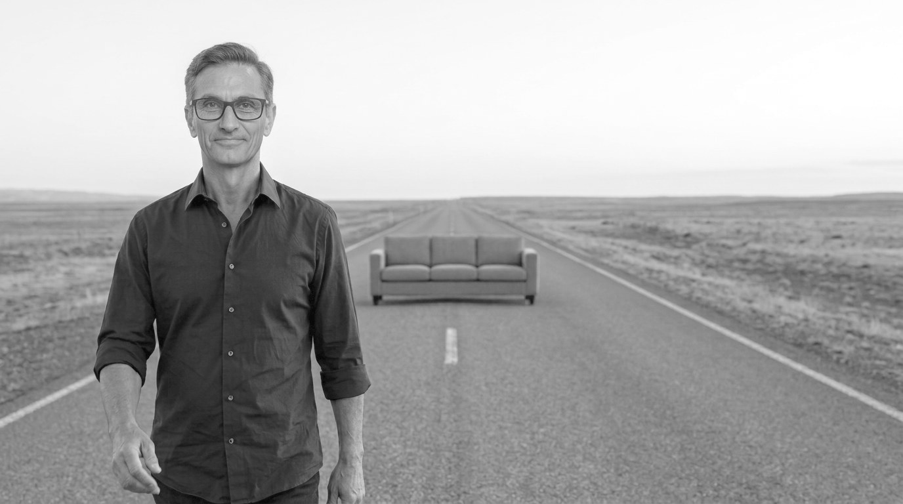
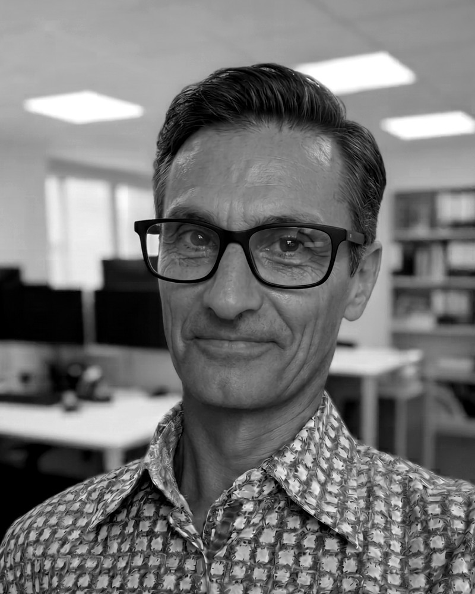

Reiniciarse a los 50
De no estar bien a estar bien.
Tú también puedes volver a ponerte en marcha.
Estoy en fase de conversaciones iniciales
Me encantaría hablar con hombres de más de 50 años que han pasado, o están pasando, por experiencias complicadas y se ven obligados a reinventarse sin saber cómo hacerlo, o que, afortunadamente, ya han conseguido reinventarse.
Si quieres contarme lo que estás pasando, o lo que ya has podido superar, me gustaría escucharte en una breve conversación de 15 minutos.
Escríbeme a reiniciarse50@proton.me

Muchos hombres, tras superar los 50, nos sentimos perdidos. Una separación, unos hijos que se van de casa, un trabajo que se acaba… o simplemente los años, que pasan. Hasta que un día nos damos cuenta de que no estamos bien.
Pensamos que los malos hábitos de tantos años son lo normal a nuestra edad, y seguimos con ellos. Nos cuesta ponernos en marcha: llamar a ese amigo, buscar un nuevo trabajo, apuntarnos a un gimnasio… Siempre hay una razón para quedarnos en el sofá. «Ya si acaso mañana.»
Además, como somos de otra generación, lo de contarle nuestras cosas a otra persona, como que no. No lo hablamos. No queremos ni bromas ni burlas, y menos sentirnos juzgados. Eso, si tenemos a alguien a quien contárselo.
Aquí no hay burlas ni reproches. Hay otro hombre que ha pasado por lo mismo y el comienzo de un nuevo camino para ponerte en marcha a partir de los 50.
¿Te has dicho alguna de estas frases?
Llevo años haciendo lo mismo y ya no me hace bien.
Mis hijos se han hecho mayores y ya no me necesitan.
Me he abandonado a mí mismo y físicamente no me veo bien.
Nadie me llama y no tengo con quién salir a divertirme.
Sé que algo tiene que cambiar, pero no sé por dónde empezar.
No se lo cuento a nadie porque no quiero que me juzguen ni que se lo tomen a broma.
Desde que me separé, la casa se me hace enorme y la vida, más complicada.
Me quedé sin trabajo y ya no sé para qué sirvo.
Si te reconoces en alguna de estas frases, que sepas que no eres el único. A nuestra edad, muchos de nosotros nos las hemos dicho alguna vez.
Cómo empezamos
Cuestionario
Unos cinco minutos. Al terminar ves tu perfil y cómo estás hoy.
Recibes tu resultado
Al terminar el cuestionario te llega por correo tu resultado, con un enlace para que elijas tú el día y la hora de la charla.
Una charla breve
Por videollamada. Me cuentas cómo estás y en qué punto te encuentras.
Informe inicial
Después de la charla, en un máximo de 48 horas hábiles, te envío por escrito un resumen de lo que hemos hablado y unas primeras pinceladas de por dónde podría empezar tu reinicio.
Seis semanas
Si te parece bien, te acompaño durante seis semanas, con videollamadas de seguimiento, para que avances por tu camino.
Estoy en fase de conversaciones iniciales
Estos pasos son el camino que tengo pensado. Ahora mismo lo que busco es conversar contigo, 15 minutos como máximo. Escríbeme a reiniciarse50@proton.me.
Cada hombre toma el camino que necesita
Hay muchas puertas por las que empezar un camino. Estas son las seis con las que solemos encontrarnos. No a todos nos mueve lo mismo.
No tengo una solución para ti. Pero sí estoy aquí para acompañarte mientras la encuentras.

Quién soy
Me llamo Rafael Ahumada García y tengo 56 años. He tenido que reinventarme más de una vez: trabajos precarios, una separación, mudanzas, épocas de dinero justo, ser padre cerca de los 50 y el intento de volver a ponerme en forma a esta edad.
Trabajé de periodista. Se me da bien escuchar.
Estoy aquí porque sé lo poco que se habla de esto entre hombres, y lo mucho que ayuda encontrar a alguien que no te mira desde arriba.
Qué no vas a encontrar aquí
- Ni terapia, ni psicología, ni un sustituto del médico.
- Ni coaching de «tu mejor versión», ni métodos milagro.
- Un entrenador o un nutricionista con su plan.
- Un orientador laboral que te traiga trabajo.
- Una promesa de cambiarte la vida.
Si lo que te pasa necesita a un profesional, te lo digo claro y te ayudo a llegar al adecuado. Eso no debilita el servicio: es lo que lo hace de fiar.
Preguntas que suelen hacerme
¿Esto es terapia?
No. No soy psicólogo ni médico y no diagnostico ni trato nada. Si lo que te pasa necesita a un profesional, te lo digo y te ayudo a dar el paso.
¿Cuánto cuesta?
De momento nada: estoy en fase de conversaciones iniciales, y la charla y tu resultado son gratuitos.
¿El perfil del cuestionario es un test psicológico?
No. No es un test clínico y no diagnostica nada. Las 20 frases de «Cómo eres» son el Mini-IPIP, un cuestionario de personalidad de uso público, en su traducción española publicada, y se puntúa como indican sus autores. El mapa de las cinco áreas y las direcciones para empezar son mías y no forman parte de ese test. Sirve para que te conozcas un poco mejor, no para ponerte una etiqueta.
No me gusta hablar de mis cosas. ¿Tengo que contarlo todo?
No. Cuentas lo que quieras, a tu ritmo. Nadie más tiene por qué enterarse.
¿Se graba la llamada?
Nunca. Tomo notas para preparar tu informe y las borro a los tres meses, salvo que tú me pidas otra cosa.
¿Puedo echarme atrás una vez contratado?
El informe inicial es tuyo y gratuito. Si decides seguir con el acompañamiento, antes de pagar recibirás por escrito las condiciones, incluido cómo echarte atrás, para que las leas con calma y las firmes si estás de acuerdo.
Estoy en un mal momento de verdad. ¿Esto me sirve?
Si llevas semanas sin poder con el día a día, si piensas en hacerte daño, si bebes más de la cuenta o el dolor es más fuerte que las ganas, primero necesitas a un profesional. Llama al 024 (24 horas, gratis) o pide cita con tu médico de cabecera. Después, si quieres, hablamos.
¿Prefieres escribirme?
Si no te apetece rellenar el cuestionario, escríbeme un correo contándome en dos líneas cómo estás. Te contesto yo, en un máximo de 48 horas hábiles.
¿Empezamos por el cuestionario?
Son unos cinco minutos y al terminar ves tu perfil.
Hacer el cuestionario